Apa itu Revolusi Industri?

Sumber : https://images.app.goo.gl/Xwk1xqJymXpWkvoy6
Apa Itu Revolusi Industri?
Revolusi Industri adalah proses perubahan besar dalam cara produksi, ekonomi, dan teknologi yang dimulai sejak abad ke-18. Sebelum revolusi ini terjadi, sebagian besar masyarakat mengandalkan tenaga manusia dan hewan untuk produksi barang, serta menjalankan pertanian sebagai sektor utama perekonomian.
Namun, dengan munculnya mesin-mesin canggih dan inovasi teknologi, cara manusia bekerja dan hidup mengalami transformasi besar. Revolusi ini terjadi secara bertahap, melalui beberapa fase yang masing-masing ditandai dengan inovasi teknologi yang mengubah peradaban manusia secara drastis.



Evolusi industri adalah perubahan besar dalam sistem produksi melalui integrasi teknologi seperti AI, IoT, dan otomatisasi, yang meningkatkan efisiensi, konektivitas, dan inovasi berkelanjutan. 産業の進化とは、AI、IoT、自動化などの技術統合を通じた生産システムの大変革であり、効率性、接続性、持続的なイノベーションを向上させることです。